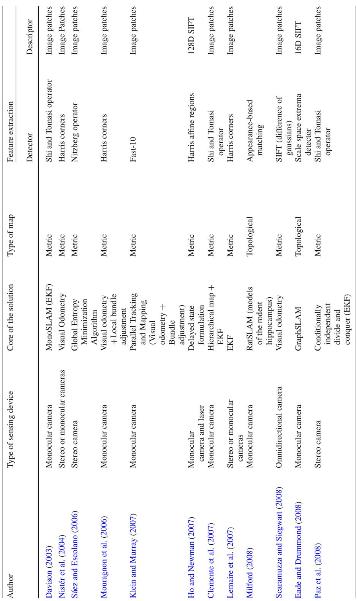
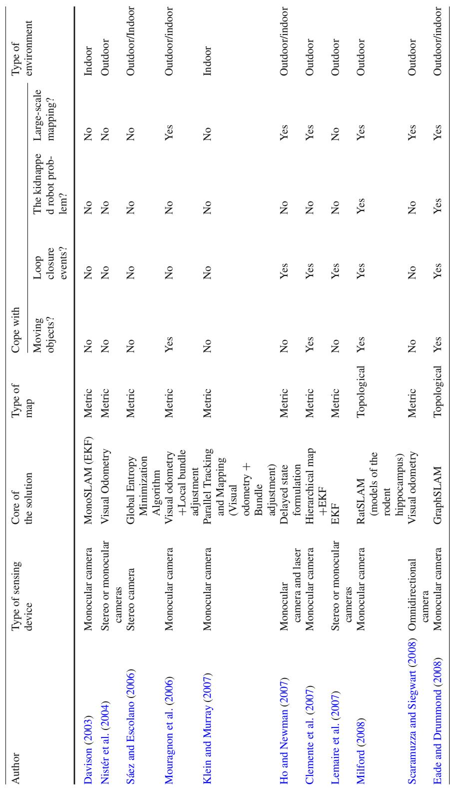

阶段 A · 建立坐标系 / Lesson 0004
视觉 SLAM 早期综述（2012）：硬功夫在看不见的地方
前面两课都在讲"框架"——滤波还是优化、前端还是后端。这一课换个角度，钻进视觉 SLAM 最底层的那条链子：怎么挑特征、怎么描述、怎么匹配、怎么判断匹配对不对。这条链子上任何一个环节出错，上面再漂亮的框架都救不回来。🔍
🎯 主题：特征 / 描述子 / 匹配 / 数据关联 / 回环铁律
👥 Fuentes-Pacheco, Ruiz-Ascencio, Rendón-Mancha
📅 2012 · Visual simultaneous localization and mapping: a survey
本节目标
读完你应该能：① 说出视觉 SLAM 失败的三大主因；② 讲清"全局特征 vs 局部特征"以及描述子的不变性为什么决定匹配成败；③ 解释"一个假阳性就能毁掉整张地图"的机制；④ 说清度量地图与拓扑地图各自的取舍。
和前面课程怎么接
第 0003 课把"图优化三步"的前端一句带过（"提取特征点与描述子，常用 SIFT / ORB / SURF"）。本节就是把这句被带过的话摊开讲一整课。而且它会给出一个关键前提：为什么"特征法"这条路天生有软肋——这正是后面直接法（第 0003 课提到的 Dryanovski "不提描述子"）与学习式特征的动机。🔗
1. 先说结论：视觉 SLAM 会怎么失败
这篇 2012 年的综述把视觉 SLAM 的失败原因归成三条主因。请注意，这三条在十几年后仍然是真实系统的头号杀手——第 0009 课（DARPA 地下挑战赛）会用实测数据把这件事再讲一遍。
① 运动模糊 / 低纹理
相机移动太快导致图像糊掉，或者面前是白墙、地面、天空这类没有可区分结构的地方——两者都会让"提取出足够多、足够稳定的特征"这件事直接失败。
② 动态环境
场景里有行人、车辆在动。经典视觉 SLAM 默认"大多数特征是静止世界的"，一旦这个假设被打破，就会把运动物体上的点当成静态约束用，定位与地图一起被带偏。
③ 视觉重复
环境里存在大量长得一样的东西（长走廊、瓷砖、重复的窗子）。这会导致感知混叠（perceptual aliasing）——两个不同地点看起来一模一样，匹配就错了。
把这三大主因记成一张"检查表"
以后你评估任何一篇视觉 SLAM 论文，都可以拿这三条去问：它解决的是哪一条？在哪一条上它反而变差了？比如"点线融合"方法主要针对①（线特征在弱纹理处仍在），"动态 SLAM"针对②，"位置识别/描述子不变性"针对③。而它们几乎都不会同时解决三条——这就是选题空间。
2. 特征：先检测，再描述
原文把特征相关的内容拆成两块：检测器（detector）负责"在哪里"，描述子（descriptor）负责"长什么样"。这条分工是理解后面所有匹配方法的前提。
检测器全谱，以及一个很实用的实验结论
原文列了当时可用的检测器，包括 Harris 角点、Harris-Laplace / Hessian-Laplace 及其仿射不变版本（Harris-Affine、Hessian-Affine）、DoG（用于 SIFT）、MSER、FAST、Fast-Hessian（用于 SURF）等。
然后它引用了 Mikolajczyk 等 2005 年的评测结论，这条结论很值得记住：
综合表现最好
Hessian-Affine 与 MSER 表现最好。
Hessian-Affine 的长处
在失焦（defocus）与 JPEG 压缩条件下最好。
原文也解释了为什么当时多数系统仍然选角点：角点的不变性好，而且被研究得最充分。
描述子：SIFT 的故事最有教学价值
原文对描述子的介绍里，最值得讲的是这一条对比结论（引自 Gil 等 2009）：
在视觉 SLAM 语境下，SURF 描述子在鲁棒性与计算时间上优于 SIFT
更刺眼的是对 SIFT 的批评：SIFT 稳定性不佳——原文的原话大意是："很多从某个相机位置检测到的路标，把相机稍微移动一点就消失了。"
这句话为什么重要？因为它把"描述子选择"从"精度高低"变成了"能不能稳定地再次看到"。SLAM 需要的不是"一次匹配得很准"，而是"同一块地方反复路过时都能认出来"。稳定性比单次精度更关键。
原文还列了描述子的变体谱系：PCA-SIFT（用 PCA 降维）、GLOH、ASIFT（仿射不变）、BRIEF（二进制）、ORB（基于 BRIEF，但做到旋转不变且抗噪）、PIRF、GPU-SIFT（并行实时）。
注意 ORB 在这条谱系里的位置
ORB = 二进制描述子 + 旋转不变 + 抗噪。二进制意味着比对只需做异或运算，速度极快；旋转不变意味着相机转个角度还能匹配上。这两点加起来，就是为什么 ORB 会成为 ORB-SLAM 的名字来源、以及后面第 0014 课里 DBoW2 词袋的技术基础。
原文还提到一条边缘路线：Eade 与 Drummond（2006）在实时 MonoSLAM 中用 edgelets（边缘段），证明边缘对光照、朝向、尺度不变、受模糊影响小，适合跟踪与 SLAM——缺点是不易提取与匹配。这条"边缘/线特征"的线索会在后面的点线融合 VIO、事件相机线 SLAM 里不断出现。
3. 匹配：基线长短决定用什么武器
原文引入了一个很清晰的分界线——基线（baseline），也就是两个相机光心之间的连线长度。基线短意味着视角差异小，基线长意味着视角差异大。这个简单的物理量决定了你该用什么匹配方法。
短基线匹配：用 patch + 相关性
基线短的时候，对应点的位置与外观几乎相同，所以可以用最简单的办法：以显著特征为中心取一个矩形窗口（patch），在窗口内采样像素强度，用相关性度量来比较。
原文给出的度量有互相关（cross correlation）、SSD、SAD，并且明确结论：归一化互相关（NCC）效果最好，而且对均匀的亮度变化不变。如果用 homography 对 patch 做变形，NCC 还能对视角变化保持不变。
缺陷一：假阳/假阴
NCC 容易产生假阳性与假阴性——在重复纹理区域里，搜索范围内可能有两个点都强烈响应，你无法靠相关值区分它们。
缺陷二：深度对噪声极敏感
短基线虽然好匹配，但算出的深度对噪声极敏感（因为视差很小，视差的一点误差会被放大成很大的深度误差）。这是"短基线好匹配、长基线好三角化"这一对矛盾的另一面。
工程建议
原文给出具体数字：patch 取 约 9×9 或 11×11 像素，并且要放在角点上——因为角点处梯度有两个以上主方向，利于匹配。
长基线匹配：必须上描述子 + 加速结构
基线一长，尺度与透视变化就大了，点可能移到图中任意位置，基于窗口的相关度量直接失效。最朴素的办法是暴力匹配，但代价随特征数按平方增长，不实用。
于是主流做法变成：描述子 + 不相似度度量（欧氏 / 曼哈顿 / 卡方距离）+ 数据结构加速（k-d 树、哈希表）。
怎么判断"这两个点到底是不是同一个"——三种判据
| 判据 | 做法 | 问题 |
|---|
| (a) 距离阈值 | 距离小于阈值就算匹配 | 会出现一对多、多对一，需要额外手段消歧 |
| (b) 最近邻 | 取距离最小的那个 | 同样可能多对一（多个查询都指向同一个目标） |
| (c) 最近邻距离比（NNR） | 把阈值加在"最近邻距离 ÷ 次近邻距离"这个比值上 | 这一招最有效：如果最近邻没有明显比次近邻更近，说明这次匹配不可靠，直接拒绝 |
为什么 NNR 这么重要
因为它引入了一个"自我怀疑"机制。单纯的"最近邻"永远会返回一个答案，哪怕这个答案毫无意义（在重复纹理里，最近邻可能只是随机撞上的）。而 NNR 会问："你确定吗？你只比第二名好一点点，那我就不信你。"——这个比值判据至今仍是 ORB-SLAM 等系统的标配。
几何约束：极线约束
原文介绍了极线约束（epipolar constraint）：$x$ 与 $x'$ 成为对应点的一个必要条件是 $x'$ 落在 $x$ 的极线上。这一个约束就把搜索范围从"整幅图像"压缩到"一条线"。这是对极几何（第 0003 课提到的"帧间匹配"背后真正的几何基础）最直接的用途。
学习式匹配在当时是什么状态
原文提到有工作把"对应问题"重构成分类问题，并且认为"很有前景"；但它同时指出一个关键限制：实时 SLAM 需要持续的在线训练，所以当时还不完全适配。后面虽然也有更快的在线学习方法被提出，但整体仍不成熟。
把这句话和后面接上
2012 年："学习式匹配很有前景，但需要在线训练，还不适配实时 SLAM。"
2016 年（第 0002 课）：学习式方法成为鲁棒感知时代的重要新前沿。
2020 年（SuperGlue）、2021 年（LoFTR）、2023 年（LightGlue）：学习式匹配全面成为主流。
这就是一条完整的"技术从不可行到主流"的时间线。读综述时留意这类"当时的限制"，它们往往就是未来的突破点。
4. 数据关联与鲁棒估计：为什么必须要 RANSAC
原文对数据关联（data association）给了一个精确的定义：把传感器测量与地图中已有元素关联起来，并且判断这个测量是不是外点、或者是不是属于地图之外的元素。
然后它给出一个非常关键的判断：再高质量的描述子也不能保证没有错误对应，因此必须使用鲁棒估计器，例如 RANSAC、PROSAC。RANSAC 的做法是估计全局关系，同时把数据分成内点（inliers）与外点（outliers）。
请记住这个"三段式"
完整的匹配链条是：① 描述子给出候选匹配 → ② 用几何约束（极线/单应）做初筛 → ③ 用 RANSAC 类鲁棒估计器把外点剔掉。缺了第③步，前面做得再好也白搭。这也解释了为什么现代 SLAM 前端里 RANSAC 几乎是"标配中的标配"。
原文还介绍了另外两类思路，作为对照：
- 图匹配（graph matching）：用图来表示点的邻域关系。原文明确点出它的局限——不实时，而且无法处理临时遮挡。
- 主动匹配（active matching，Chli & Davison）：一种贝叶斯式的帧间对应方法，只在"最可能找到真阳性"的局部区域搜索，搜索策略由香农信息论引导。它对快速相机运动效果好，但面对特征数增多时扩展性差。后来有工作把它扩展到可实时处理数百个特征且不损失精度。
怎么评价检测器/匹配器的好坏
原文列了两套评价工具，都值得知道：ROC 曲线（统计真阳 TP、假阳 FP、假阴 FN、真阴 TN，外加阳性预测值与准确率），以及信息检索界的 precision（正确匹配数 ÷ 找到的对应总数）与 recall（正确匹配数 ÷ 期望对应总数）。
注意：这两个指标会在第 0013、0014 课变成主角
把 precision / recall 记住，因为它会出现在回环检测与视觉场景识别的全部评测里，而且那里的"坑"更深（比如真阴几乎不评、$R_{P100}$ 会失效、还有软真值）。本节只是第一次打招呼。
5. 回环检测：三种特例，三种做法
原文把数据关联的三个"特例"单独拿出来讲：回环检测（loop closure detection）、被绑架机器人（kidnapped robot）、多会话与协同建图（multi-session and cooperative mapping）。
回环检测为什么难
原文的判断是：回环检测"一直是大尺度 SLAM 的最大障碍之一"，同时也是从严重错误中恢复的关键。它衍生出一个专门问题——感知混叠（perceptual aliasing）：两个不同地点被认成同一个。即使有相机也会出现，因为环境里存在大量重复特征（走廊、相似的建筑构件、大片灌木）。
方法三分类（引自 Williams 等 2009）
(1) map-to-map
关联的数据取自度量地图空间：把当前建出的子图与历史子图做配准/比对。
(2) image-to-image
关联的数据取自图像空间：直接比较两帧图像的外观。
(3) image-to-map
一端是图像、一端是地图。原文指出理想系统应融合三者的优点。
原文还列了五种代表方法，各自的思路差异很值得体会：
| 工作 | 核心思路 |
|---|
| Ho & Newman (2007) | 相似度矩阵 + 奇异值分解（SVD），可抗重复与视觉歧义的图像 |
| Eade & Drummond (2008) | 统一方法同时做"跟踪失败恢复"与"回环检测"；每个节点存地标并维护节点间变换估计；用 BoVW 建外观模型找相似节点 |
| Angeli 等 (2008) | 贝叶斯滤波 + 增量式 BoVW，对每帧计算"属于已访问场景"的概率 |
| Cummins & Newman (2008) | 纯外观的生成式模型 FAB-MAP：不仅算相似度，还计算"属于同一地点"的概率，从而给出观测位置的 pdf |
| Mei 等 (2010) | 基于共视关系（co-visibility）的 topometric 表示，简化数据关联并提升外观识别性能 |
FAB-MAP 那一行值得多想一秒
"不只知道像不像，还知道是不是同一个地方"——这是从相似度到概率的一跃。相似度是一个无标量的分数（0.8 是高还是低？取决于场景），而概率是一个有明确解释的量。第 0014 课会看到，这个"从相似度走向概率"的思路延续到了今天的贝叶斯滤波式回环检测与二项分布投票模型。
6. 一条工程铁律：假阳性的代价是"不可挽回"
这是本节最该被记住的一段。原文在讨论回环检测时给出了一条非常硬的要求，以及它背后的理由：
原来的意思（建议记住这个对比）
上面这些工作都在追求 precision = 100%，因为——一个假阳性就足以在建图过程中造成不可挽回的失败。
而在 SLAM 语境下，假阳性（false positive）远比假阴性（false negative）严重：假阴性只是降低了 recall，并不影响 precision；但假阳性会把一条错误的约束写进图里，把整张地图拉歪，而且这个错误往往无法被自动识别和撤销。
因此理想的回环检测器应该做到：recall 尽可能高，而 precision 必须为 100%。
把这条要求翻译成直观感受：宁可漏掉十次真回环，也不能错认一次。因为漏掉的那十次，你还有机会在后面的帧里再次遇到同一个地方（时间连续性给了你很多次机会）；但错认的那一次，会被当作真约束送进后端，把整条轨迹拽变形。
互动判断
假设一个回环检测器 A：precision = 99%（recall = 90%）；另一个 B：precision = 100%（recall = 40%）。按本节 2012 年的立场，应该选哪个？
⚠️ 提前埋一个伏笔：这个立场后来被推翻了
记住你现在选的是 B。等你在第 0013 课（2024 视觉场景识别教程）看到下面这段话时，请回想今天的选择：
"过去，这个指标（$R_{P100}$）对 SLAM 回环检测很重要，把 precision 保持在 1 可以避免错误回环、进而避免建图错误。然而，随着 SLAM 鲁棒图优化技术的出现，避免错误回环已经变得不那么重要了。有了鲁棒图优化，找到足够多的正确回环（TP）比避免错误回环（FP）更重要。"
同一个技术问题，十二年后的答案完全不同——但变化的原因不是"大家变大胆了"，而是后端有了新的能力（鲁棒核 + 外点剔除）。这是本课程最重要的一类知识：同一个指标该定多严，取决于下游有多鲁棒。
7. 三大解法家族与地图类型
原文对"怎么解视觉 SLAM"做了一次三分。这个分法比第 0003 课的三代划分更"横向"，可以当作另一把尺子：
| 家族 | 代表方法 | 核心特征与已知失效 |
|---|
| (a) 概率滤波 |
EKF-SLAM（Smith 等 1990 的 stochastic map）、FastSLAM、ML、EM |
对坏关联极其敏感——一个错误测量就能让整个滤波器发散；复杂度对地标数是二次的，难以维护大地图。降复杂度方案包括 Atlas Framework、压缩 EKF（CEKF）、稀疏扩展信息滤波（SEIF）、分治 O(n)、条件独立子图（CI-Submaps）。 |
| (b) 增量式 SfM |
Visual Odometry（Nistér）、PTAM、FrameSLAM / View-Based Maps |
标准 SfM 流程本是离线的（提特征 → 匹配 → BA 最小化重投影误差）。它的关键性质是：SfM 定位精度高，但并不以保证一致地图为目标。VO 可每帧处理数千特征，而概率方法只处理少量特征。 |
| (c) 仿生模型 |
RatSLAM（用啮齿类海马体空间记忆模型） |
单相机即可产生复杂环境的一致且稳定表示。实验显示能完成 51 条以上、单条最长 5 km 的回路闭合。这是三篇综述里唯一提到仿生路线的。 |
滤波家族的两个关键数字
- FastSLAM 的计算代价是 $O(p\log n)$（$p$ 为粒子数，$n$ 为地标数）。它的核心难点原文说得很清楚：无法确定需要多少粒子——粒子多则内存与时间昂贵，粒子少则结果不准。（这和上一节粒子滤波的两难是同一件事。）
- MonoSLAM（Davison 2003）是第一个实时单目概率系统，同时做三维度量点建图与定位，30 fps，只用一台数字相机，考虑完整六自由度相机运动。局限是只能用于受限室内空间（因为它用 EKF）：运动模型假设恒定线速度与角速度，因此无法应对突然的运动；而且为保证跟踪，特征在帧间位移必须很小。
一条被原文明确点出的"路线之争"
Strasdat 等（2010）的结论
单目 SLAM 要提高精度，应当增加特征数（这是 SfM 的本质属性），而不是增加帧数；并且BA 优化优于滤波。但——在高不确定性情形下，滤波可能反而有利。所以理想系统应同时利用 SfM 与概率滤波之长。
这一段把前两课的"滤波 vs 优化"之争给出了一个更细的答案：不是"优化全面碾压滤波"，而是"在什么不确定性水平下用哪个"。请留意这个句式——本课程后面会反复出现"取决于条件"式的结论，因为真实工程的答案往往就是这样。
地图表示：度量 vs 拓扑
度量地图（metric）
刻画几何属性，又分两类：占据栅格地图（把环境离散成单元格，可含 2D / 2.5D / 3D 信息）与路标地图（保存若干显著特征的三维位置）。
拓扑地图（topological）
描述地点间的连通性：环境表示为"有意义地点的列表 + 连接它们的弧"，是类图结构，可简化大范围建图。但必须做全局优化以降低局部误差。
两条必须记住的取舍（原文明确写出）
关于路标地图：它只捕获孤立路标，节省内存与计算；因此不适合避障与路径规划——因为"某处没有地标"并不意味着"该处是自由空间"。但在"位姿确定比地图更重要"时，这类表示最合适。（这就是第 0002 课 Fig. 4 那张"稀疏点图 vs 稠密桌面"的结论版。）
关于拓扑地图：它的根本局限是缺少度量信息 → 无法用来导引机器人移动。因此出现了"度量 + 拓扑混合"的方案。
原文对未来的判断是：当前最有前景的环境表示是基于图的；仍需克服的挑战包括——检测到错误位姿后编辑图的能力，以及生成超大规模全局地图（lifelong mapping）。
原文的 Table 1：18 个系统的横向对比
这篇综述最有价值的可复用素材是它的 Table 1——把 18 个系统按 8 个维度做了横评：作者与引用、传感设备类型、解法核心、地图类型、检测器、描述子、应对能力（运动物体？回环？被绑架机器人？大尺度建图？）、测试环境类型。

诚实说明：这张图不是插图，而是原文 Table 1 的扫描裁剪件（该论文正文没有插图，只有这张大表）。这一张覆盖 Table 1 的前半：Author、Type of sensing device、Core of the solution、Type of map、Feature extraction（Detector / Descriptor）诸列，从 Davison 2003 到 Paz 等 2008。
怎么看这张图：建议你把注意力放在 "Core of the solution" 与 "Descriptor" 两列——前者让你看到"同一个问题被多少种不同思路解过"，后者让你看到描述子的实际使用史（128 维 SIFT、Shi-Tomasi + patch、FAST-10 + patch……）。请一并注意：这张表里"是否处理 moving objects / kidnapped robot"多数为 No，说明即使到 2012 年，这些能力仍然是少数系统的特权。
OCR 提醒：扫描件里混有西班牙文残留（"Odometría visual + Bag of words" 应为 "Visual odometry + Bag of words"），引用时请按英文修正。

这是 Table 1 的另一半扫描件，覆盖 Cope with 四列（Moving objects / Loop closure / Kidnapped robot / Large-scale mapping）与 Type of environment，从 Davison 2003 到 Eade & Drummond 2008。
怎么看这张图：这是全表最"扎心"的部分。"被绑架机器人"这一列几乎全是 No，只有少数后来者（Konolige 2009、Williams 2009、Botterill 2010）是 Yes。这张表直观地告诉你：到 2012 年为止，视觉 SLAM 在"跟踪不会丢"这件事上有了长足进步，但在"丢了之后能不能自己找回来"上几乎还是空白——而这正是今天重定位与位置识别研究的分量所在。
备注：同目录下另有 2 张同类扫描件（5b994b08…、11277dc6…），内容为同表的后半，本课不再重复贴出以免占版面。
结尾：原文承认的三件事
- 图像匹配与数据关联仍是开放研究领域。检测器与描述子的选择直接影响系统"跟踪显著特征、识别已见区域、构建一致地图、以及实时工作"的表现。
- 长期导航中的数据关联尤其困难：数据库持续增长、环境在变化、而且环境"极度回环（extremely loopy）"。接受一次坏关联就会在整个 SLAM 系统中造成严重错误，使定位计算与地图构建都不一致——因此必须提出新策略降低假阳性率。
- 至今没有任何评估与比较完整视觉 SLAM 系统整体效率与效果的标准。作者建议的替代指标是：人工干预程度、定位精度、地图一致性、实时运行能力、以及随地图增长而来的计算成本控制。
互动判断
原文说"基于外观的方法（以 BoVW 最常用）在数据关联上很受欢迎"，但同时列出它三条局限。下面哪一条不是原文提到的？
课后练习
-
请解释短基线与长基线这一对矛盾：为什么"好匹配"和"好三角化"难以同时满足？
展开查看答案
因为两者对"视差"的偏好正好相反。短基线时，同一个三维点在两帧中的位置变化很小，所以外观几乎相同、容易匹配（NCC 就够用）；但正因为视差小，视差的微小误差会带来巨大的深度误差——深度大致与视差成反比，视差趋近于零时深度趋于无穷、误差趋于无穷。反之，长基线带来的视差大、深度精度高，但外观差异大、必须靠描述子匹配，而且匹配更难、外点更多。所以工程上常见的做法是"短基线负责跟踪、长基线（或关键帧）负责三角化与约束"。
-
为什么说"最近邻距离比（NNR）"比"最近邻（NN）"和"距离阈值"更好？请从"这个判据在什么情况下会拒绝匹配"这个角度回答。
展开查看答案
NN 和距离阈值都不会因为"缺乏区分度"而拒绝匹配：NN 永远返回一个最近邻（哪怕它只是勉强最近）；阈值只关心绝对距离，不看排名分布。而 NNR 把阈值加在"最近邻距离 ÷ 次近邻距离"这个比值上，因此当最近邻没有明显领先次近邻时（也就是这次匹配可能只是碰巧最像），比值会接近 1，从而被拒绝。也就是说，NNR 是唯一一个"因为自己不够确信而主动放弃"的判据——这正是它在重复纹理环境中格外重要的原因。
-
本节提到"路标地图不适合避障"。请用一句话说清这个论断的逻辑，并指出它后来被什么表示方式解决了。
展开查看答案
逻辑是：路标地图只记录"哪里有可区分的特征"，而"没有特征"既不等于"没有障碍"，也不等于"可以通行"——很光滑的墙面可能一个路标都没有，但它显然是障碍物。所以路标地图的空白区不携带自由空间信息。后来解决的表示是占据栅格地图（把空间显式标注为占据/空闲）与稠密几何表示（点云、TSDF、ESDF），其中 TSDF 系（KinectFusion → Voxblox → ESDF）在后来的课程里会专门讲。
-
请复述"一次假阳性就能造成不可挽回的失败"的机制。它和"一次假阴性"的差别到底在哪？
展开查看答案
差别在于"错误能否被后续信息纠正"。假阴性（漏掉一个真回环）没有引入任何错误信息，只是错过一次机会；而围绕轨迹的时间连续性意味着机器人后面很可能再次经过同一地点，机会不止一次，所以漏检的代价是"降低 recall"。假阳性（把两个不同地点认成同一处）则会把一条错误的相对位姿约束写进因子图，后端优化会"忠实"地按这条错约束重新排布整条轨迹与地图——错误被放大并扩散到全局。更麻烦的是它很难被自动发现，因为系统内部没有"真值"来判断这条约束是错的。因此当年的立场是：precision 必须为 100%，recall 尽量高即可。